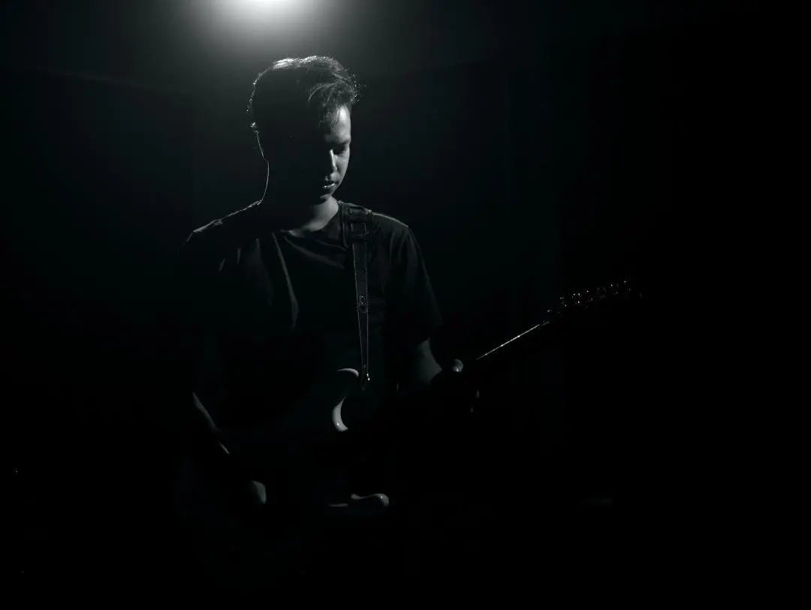

We met the first time and started jamming right on the spot.
Take a look. Feedbacks are appreciated
We learned this song just for the music video. We all did a great job. Kudos to the spate.
This was 2,3 years back when I got an offer to be a part of this amazing team.
Fun Fact: I was the youngest one in the band.